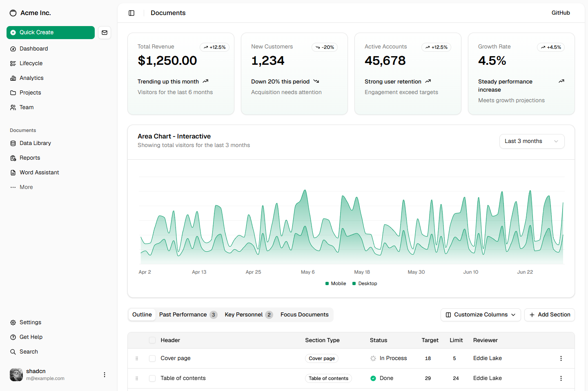
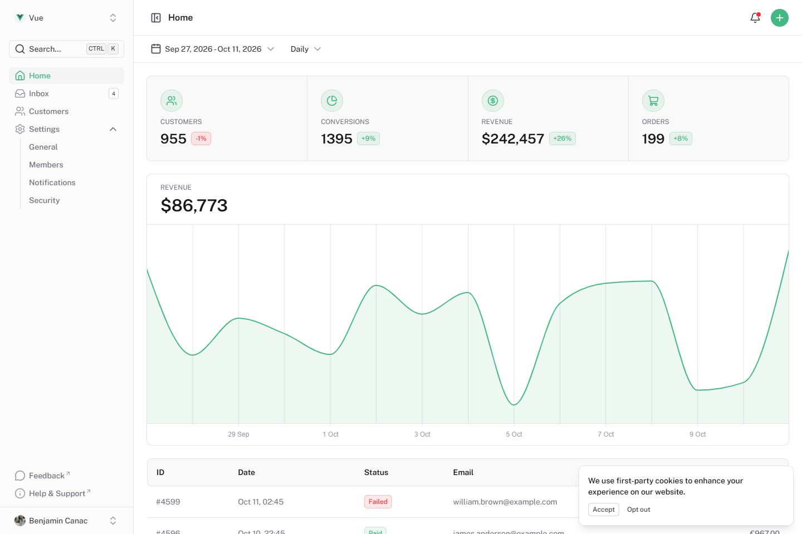
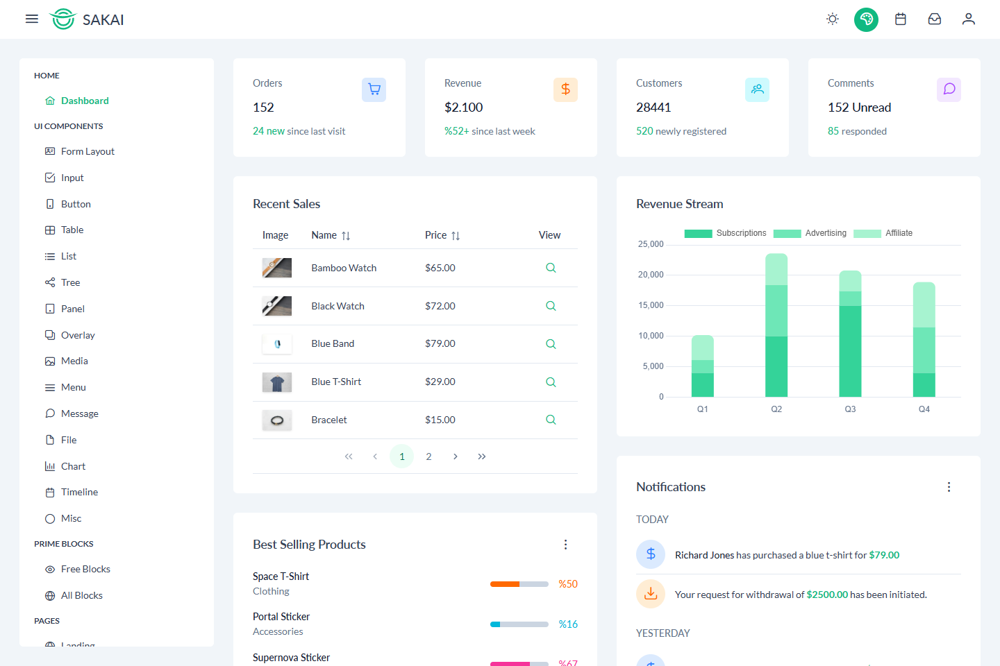
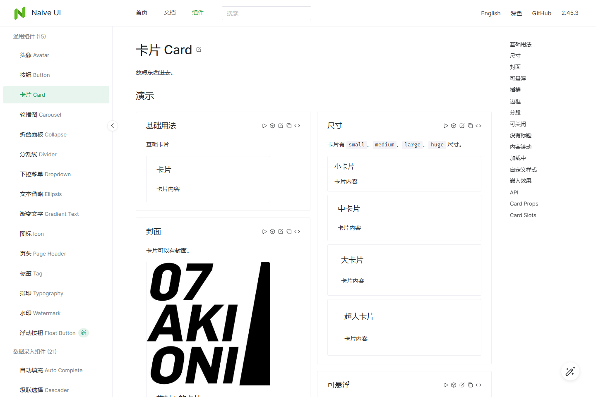
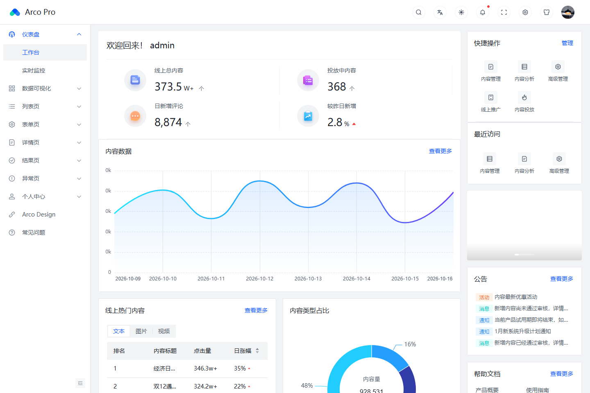
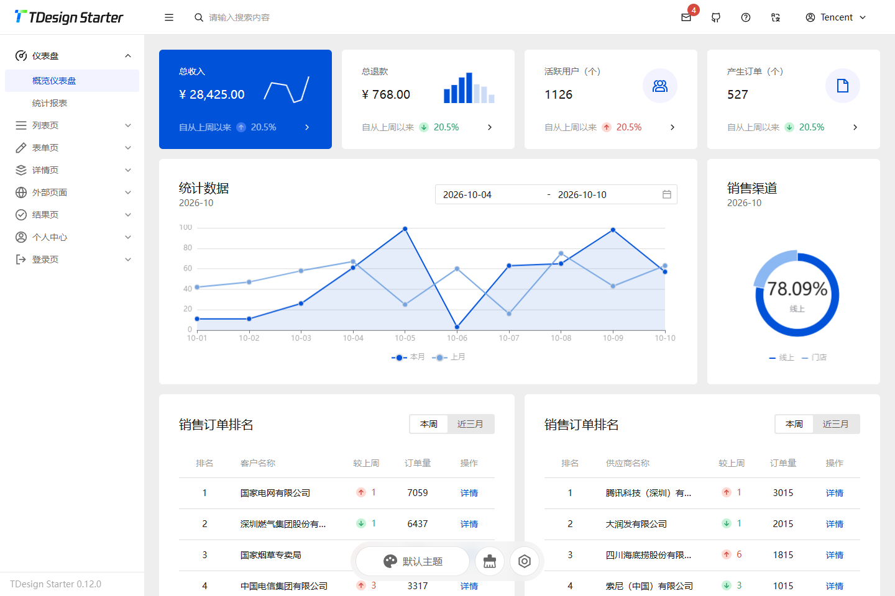
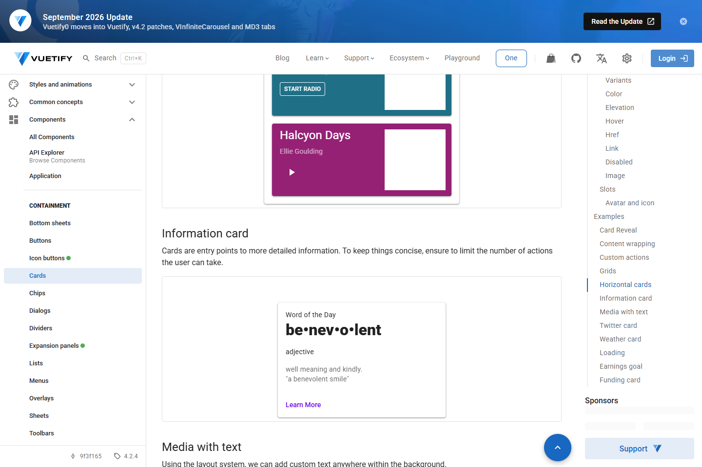
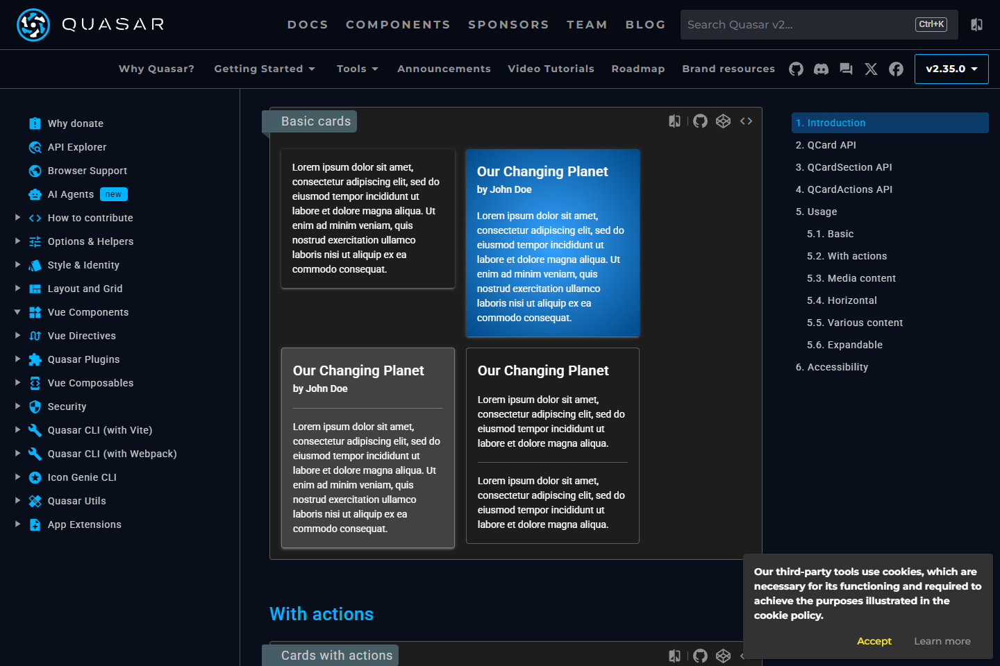
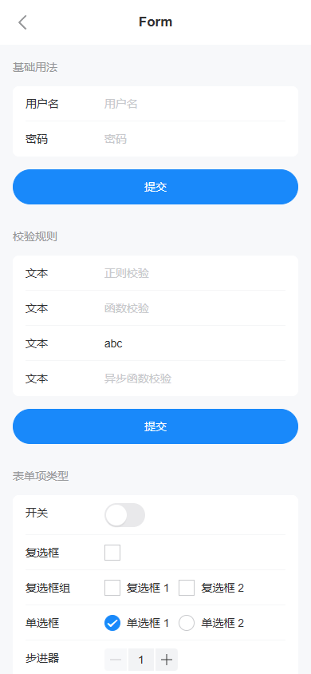
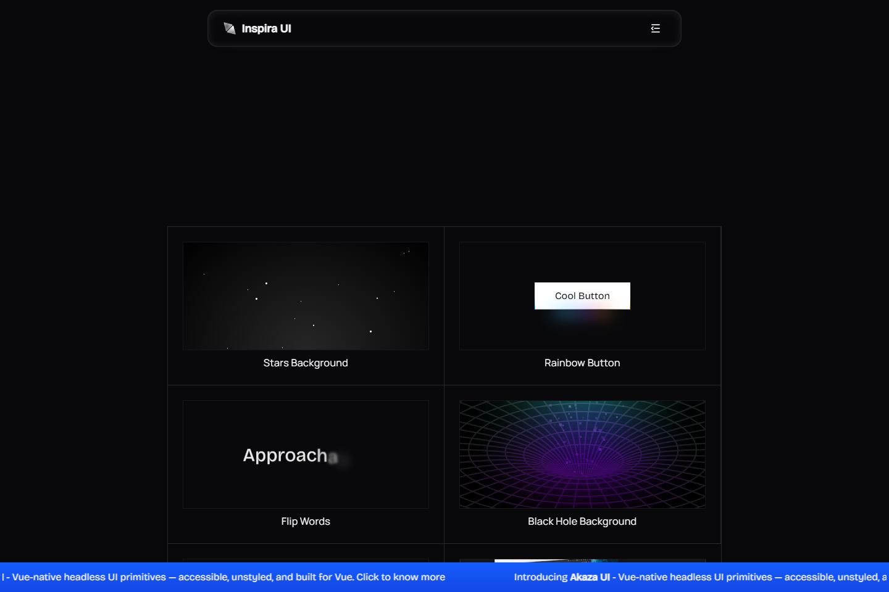

放大查看 ↗A01官方界面 / 组件实例shadcn-vue克制、清楚的层级适合：参赛端与主办方通用底座源码型组件；需要把运动品牌和席位设计做成自己的组件。MITVue 生态打开实例 ↗源码 ↗加入候选
放大查看 ↗A02官方界面 / 组件实例Nuxt UI干净、轻盈的应用界面适合：主办方工作台、个人中心有 Vue 模板；采用前先核对与本项目现有样式、路由的适配。MITVue 生态打开实例 ↗源码 ↗加入候选
放大查看 ↗A03官方界面 / 组件实例PrimeVue / Sakai清晰、完整的业务后台适合：主办方、政府和平台截图为开源 Sakai 模板；商业模板不在本轮范围。MITVue 生态打开实例 ↗源码 ↗加入候选
放大查看 ↗A04官方界面 / 组件实例Naive UI精细、轻量的业务控件适合：表单、报名详情、后台截图为真实组件实例；完整产品需要自行组织布局。官网直达页初始 HTTP 404，但客户端成功渲染真实卡片实例；保留状态记录。MITVue 生态打开实例 ↗源码 ↗加入候选
放大查看 ↗A05官方界面 / 组件实例Arco Design Vue中文业务后台、紧凑高效适合：政府审核与赛事管理Vue Pro 示例用于比较信息密度，不直接套用全部菜单。MITVue 生态打开实例 ↗源码 ↗加入候选
放大查看 ↗A06官方界面 / 组件实例TDesign Vue Next稳重、规整的中文工作台适合：政府和平台截图采用官方开源 starter；实际依赖版本待选型后核对。官方演示出现 Aegis 监测脚本错误；界面正常显示。本轮仅作外观参考。MITVue 生态打开实例 ↗源码 ↗加入候选
放大查看 ↗A07官方界面 / 组件实例VuetifyMaterial 层次与明确反馈适合：移动应用感、个人卡片体系较完整；整体替换的成本高于局部组件引入。MITVue 生态打开实例 ↗源码 ↗加入候选
放大查看 ↗A08官方界面 / 组件实例Quasar应用式布局与触摸反馈适合：移动服务和连续流程也是应用框架；风格可参考，是否整体采用需评估。MITVue 生态打开实例 ↗源码 ↗加入候选
放大查看 ↗A09官方界面 / 组件实例Vant手机优先、操作直接适合：手机报名、表单和弹层移动组件库，不能独自承担政府桌面工作台。MITVue 生态打开实例 ↗源码 ↗加入候选
放大查看 ↗A10官方界面 / 组件实例Inspira UI有层次的卡片与动效适合：荣誉、头像、匹配成功和成长反馈只在关键节点使用动效；报名与资金操作保持清晰。截图为免费组件展示区，Pro 商业产品未纳入。MITVue 生态打开实例 ↗源码 ↗加入候选
放大查看 ↗S01技能说明，无固定外观frontend-design视觉方向与非模板化界面适合：给参赛端建立独立视觉语言没有固定皮肤；截图是技能说明原文。Apache-2.0已核对技能源文件打开实例 ↗源码 ↗加入候选
放大查看 ↗S02作者展示站，非效果保证UI UX Pro Max风格、色彩、排版和交互方案适合：先比较方案，再冻结设计规范作者展示站用于参考；不能把营销效果当本项目验收。MIT已核对技能源文件打开实例 ↗源码 ↗加入候选
放大查看 ↗S03作者展示站，非固定皮肤Impeccable审美评审、精简、文案与动效适合：清理演示式表达，统一页面细节它是设计方法和检查工具；本轮不运行安装或改造命令。Apache-2.0已核对技能源文件打开实例 ↗源码 ↗加入候选
放大查看 ↗S04作者界面实例interface-design应用、后台和长期设计一致性适合：主办方、政府、平台的信息层级官方实例用于比较工作台风格；仍需结合真实职责。MIT已核对技能源文件打开实例 ↗源码 ↗加入候选
放大查看 ↗S05官方交互规范页面web-design-guidelines键盘、表单、焦点、加载和错误反馈适合：让报名流程容易操作、易于恢复这是交互标准，不是主题皮肤。许可待复核已核对技能源文件打开实例 ↗源码 ↗加入候选
放大查看 ↗S06作者组件实例，非技能生成结果emil-design-eng组件细节与动效设计工程适合：头像、席位、加入和准备反馈截图为作者的 React 提示组件；只参考动效，不直接搬进 Vue。MIT已核对技能源文件打开实例 ↗源码 ↗加入候选
放大查看 ↗S07技能说明，无固定外观improve-animations动画审查与优化方案适合：避免跳动、等待无反馈和过度庆祝只负责审查与计划；截图为技能说明。MIT已核对技能源文件打开实例 ↗源码 ↗加入候选
放大查看 ↗S08技能说明，无固定外观vue-best-practicesVue 3 / TS 组件与状态规范适合：实现自己的可复用产品组件开发规范没有独立视觉外观；不将其包装成皮肤。MIT已核对技能源文件打开实例 ↗源码 ↗加入候选
放大查看 ↗S09技能说明，无固定外观vue-testing-best-practices组件、浏览器与交互测试适合：普通角色和手机流程验收没有固定皮肤；用于验证所选设计。MIT已核对技能源文件打开实例 ↗源码 ↗加入候选
放大查看 ↗S10技能说明，无固定外观vue-router-best-practices导航、页面状态与任务回跳适合：登录后回原任务、退出与切换角色没有固定皮肤；与视觉技能配合。MIT已核对技能源文件打开实例 ↗源码 ↗加入候选